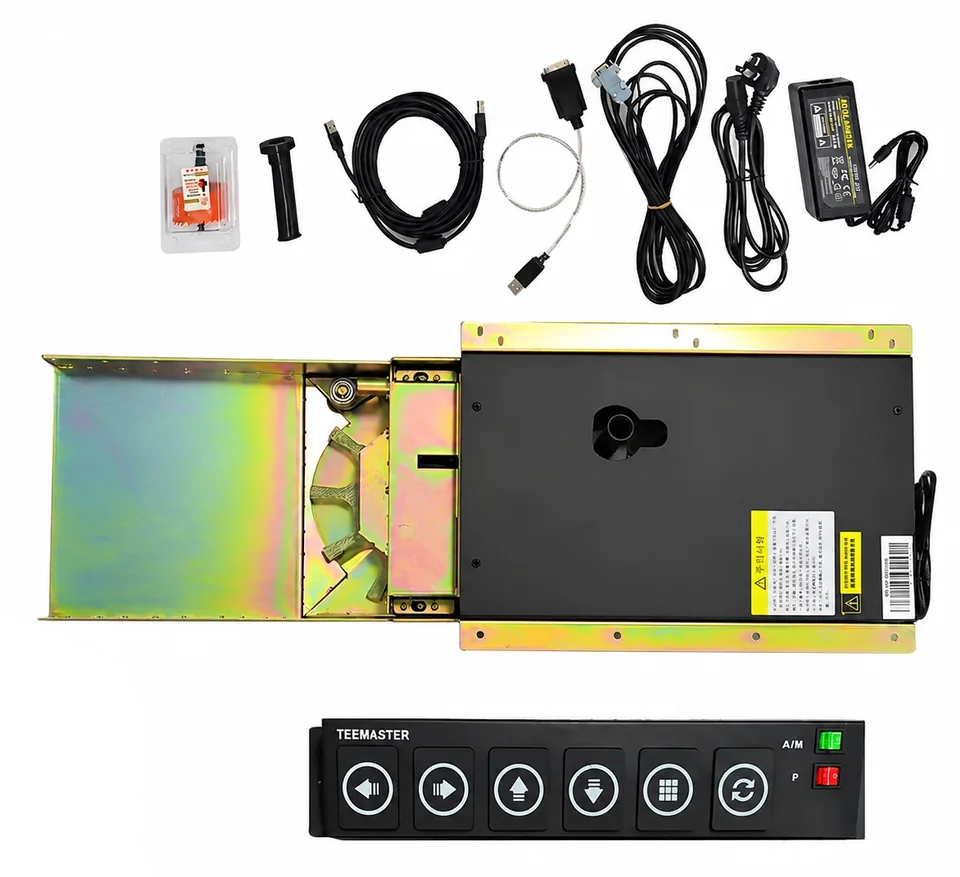

Automatic ball return system.
The MNQHQJ002 automatic ball return system provides hands-free ball collection and return for indoor golf practice. Review the collection area, hitting surface and controls together when adding it to a new or existing bay.

Published product information.
| Item | Published information |
|---|---|
| Model | PGM MNQHQJ002 |
| Function | Automatic ball collection and return |
| Practice use | Hands-free return to support a continuous practice routine |
| Setup description | Plug-and-play integration, as described in the catalog |
| Dimensions and power | Request the equipment dimensions and electrical requirements for the supplied version |
Source: PGM simulator catalog (PDF, 19 MB), printed page 24 / PDF page 25. Reviewed 12 November 2026.
Plan the floor and return path together.
Send a photograph and plan of your hitting area, including the screen, floor levels, hitting mat and any existing tee-up equipment. The collection and return arrangement must fit that layout rather than being selected from floor area alone.
For an upgrade, identify the equipment you already own and how it is controlled. Ask which installation parts, power connections and control interfaces are supplied, and which work is required locally.
The P8 package lists also refer to an automatic tee-up system. Ask the quotation to distinguish tee-up equipment, ball collection and ball return so each supplied function is clear.
Before ordering a ball-return system.
Can I ask for this component separately?
Yes. Specify model MNQHQJ002 and provide your room and existing-equipment details when requesting a component quotation.
Does plug-and-play mean it fits every room?
The catalog describes the setup as plug-and-play. Floor geometry, available space, electrical requirements and the control arrangement still need to be checked for your installation.
What should the quotation include?
Ask for the supplied equipment, installation parts, dimensions, power requirements, compatibility, delivery terms and component warranty.
Discuss the equipment and your project.
Include model MNQHQJ002, room photos, your floor arrangement and any existing simulator equipment.